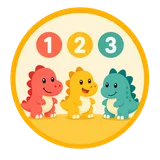
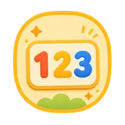

Tutor
Missão para Mateus
Tema: dinossauros
Contagem até 6
Prévia

Como funciona
A família compartilha o contexto, o tutor prepara cada experiência e a criança percorre uma jornada construída para o seu momento.
Tutor
Missão para Mateus
Próxima missão

Família
Última devolutivaMateus reconheceu pequenos grupos com mais segurança. O próximo passo já está combinado.
Um ciclo conectado
Tudo começa pela criança
A família compartilha preferências, motivadores e aspectos da rotina. Esse contexto orienta um ciclo mais cuidadoso desde o início.
Planejar e realizar
A mesma atividade aparece de dois jeitos: o tutor organiza escolhas pedagógicas e a criança vê apenas uma missão simples por vez.
Criador de atividade
Contar fósseis no mapaMissão do dia
Registro do tutor
Como foi a sessão?Painel da família
Última devolutivaA sessão foi positiva. O próximo passo é repetir a contagem com menos elementos e manter o tema preferido.
Registrar e devolver
Depois do encontro, o tutor registra o que funcionou e o próximo passo. A família recebe uma devolutiva clara e o ciclo continua com contexto.
Mediação humana
Os vínculos, os acessos e as decisões importantes continuam mediados pela equipe Cognita.
Conhecer os cuidados de segurança